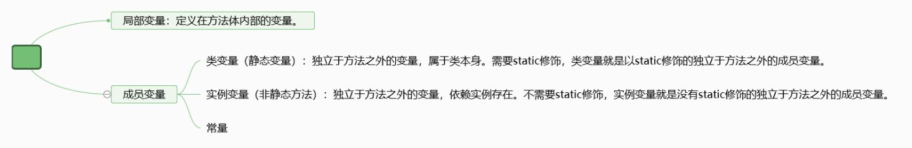
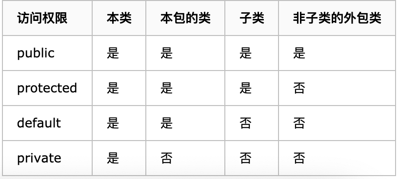

前言
本篇文章主要总结了面向对象、类和对象、Java存储区域、封装、继承等基础知识。
面向对象OOP（一）
1.面向对象概述
面向对象和面向过程区别
面向对象是交给对象去做（java），面向过程是自己一步一步做（c）
如：前者是去饭店吃饭，让别人做。后者是自己一步一步买菜做饭
前者是把脏衣服给别人洗。后者是自己一步一步洗衣服
面向对象思想特点**
将我们从执行者变成了指挥者
面向对象开发
不断的创造对象、使用对象、指挥对象做事。
面向对象特征
encapsulation封装
inheritance继承
polymorphism多态
2. 类、对象
类简介
- 类（class）是构造对象的模板，由类构造（constrist）对象的过程叫做”创建类的实例”
- 封装是把数据和行为装在一个包里，对象的使用者不需要了解内部细节
- 对象中的数据称为实例域（instance fields）
- 操纵数据的过程成为方法（method）
- 每个对象都有一组特定的实例域值，这些值的集合就是这个对象的当前状态（state）
对象的三个特征
- 行为 behavior
- 状态 state
- 标识 identity
OOP编程：首先设计类 然后往每个类中添加方法
类之间的关系
- 依赖 use-a的关系，最常见的关系，应该尽可能减少依赖，让类之间耦合度最小
- 聚合 has-a的关系，例如订单对象包含一些项目对象。意味着a的对象包含b的对象
- 继承 is-a的关系，意味着特殊与一般，比如rushoder和oder的关系
3.堆、栈、方法区
堆区:
1.存储的全部是对象，每个对象都包含一个与之对应的class的信息。(class的目的是得到操作指令)
2.jvm只有一个堆区(heap)被所有线程共享，堆中不存放基本类型和对象引用，只存放对象本身
栈区:
1.每个线程包含一个栈区，栈中只保存基础数据类型的对象和自定义对象的引用(不是对象)，对象都存放在堆区中
2.每个栈中的数据(原始类型和对象引用)都是私有的，其他栈不能访问。
3.栈分为3个部分：基本类型变量区、执行环境上下文、操作指令区(存放操作指令)。
方法区:
1.又叫静态区，跟堆一样，被所有的线程共享。方法区包含所有的class和static变量。
2.方法区中包含的都是在整个程序中永远唯一的元素，如class，static变量。
4.JAVA的引用
- JAVA中引用变量存的是地址值，类似于被限制的指针，不能指向内存任意位置。
- JAVA有完整的垃圾回收机制，当一个对象没有被引用时，JAVA会定时清理垃圾，不用自己手动释放空间
5.成员变量和局部变量
- 成员变量在类中方法外，局部变量在方法定义中过着方法声明上
- 成员变量在堆（属于对象），局部变量在栈（属于方法）
- 成员变量随着对象创建存在 ，对象消失而消失，局部变量随着方法调用而存在，调用完毕消失。
- 成员变量有默认初始值，局部变量没有初始化值，必须赋值才能用。
- 局部变量可以和成员变量同名，就近原则（方法里有局部的就用局部的，没有就用方法外的成员变量）
- 数据类型包括基本数据类型（byte.short.int…）、引用数据类型（数组.类，接口，枚举）
- 形式参数是基本数据类型的时候，传进去的是值
- 形式参数是引用数据类型的时候，传进去的是地址值

6.匿名对象
有名字的对象：
Car c1 = new Car();` c1.run;`匿名对象：
new Car().run();匿名对象只适用于对方法的一次调用，多次的话就会产生多个对象，不如用有名字的对象，创建一次多次调用
- 匿名对象可以调用属性，但是没有意义，调用后就成为垃圾，赋值要用有名字的对象
7.封装概念
- 隐藏对象的属性和实现细节，仅对外提供公共访问方式
- 好处：提高代码复用性
提高安全性 - 原则：将不需要对外提供的内容隐藏
把属性隐藏，提供公共方法对其访问 - 实现封装的关键是绝对不让类的方法访问别的类的实例域 这意味着一个类可以全面改变存储数据的方式
8.Private封装应用
- 如果没有封装，安全性可能有问题（年龄设置为负数是合法的）
- private一个变量，则只有这个类可以访问，外界访问可以设置set函数和get函数，具体要求可以在函数语句里面要求。
- 如
private int age，在别的类里就不能改age，需要用自己设置的setAge()方法和getAge()方法来设置和调用。然后在setAge函数里面写上年龄要求，报错等信息。 - 私有只是封装的一种体现形式
9.This应用
- This是用来区分成员变量和局部变量重名，当setAge方法调用传进来的局部变量age，并赋值给对象的成员变量age时，由于就近原则
age = age相当于局部变量赋值给局部变量
这个时候需要用This来解决重名问题：this.age = age;
这行代码是把传进来的局部变量age的值赋值给对象的成员变量age
10.继承extends
举例：
class Cat extends Animal { }
1.继承的好处
- 提高代码复用性
- 提高代码可维护性
- 让类与类产生关系，是多态的前提
2. 继承的坏处
- 类的耦合行增强了
3. JAVA继承的特点
- JAVA只支持单继承，不支持多继承（只能有一个爸爸）
（两个父类可能有同名的方法，多继承有安全隐患） - JAVA支持多层继承（继承爸爸，爸爸继承👴🏻）
- 子类可以用父类的 父类不可以用子类的
- 共性看顶层（父类的父类），所有功能看最底层
4. 继承的注意事项
- 子类只能继承父类中所有非私有的成员方法和成员变量
- 子类不能继承父类构造方法（构造方法要和类名一样）
- 子类与父类有同名变量的时候，就近原则用（一般用不到）
5. this 和super
- This可以调用本类变量 和父类变量（本类没有的时候）
- Super是调用父类的变量
6. 子类中所有构造方法都会默认访问父类中空参数的构造方法
1 | class Father () { |
这段代码的结果是
1 | 父类构造方法 |
因为系统会在子类构造方法中默认加一句super();
来访问父类的构造方法
- 原因是子类会继承父类数据，所以先要初始化父类的数据，才能初始化子类的数据
- 每一条构造方法第一句都会默认加上super(); 最上层的父类默认继承的Object类
- 当父类只有有参构造时，子类必须用类似以下的语句
super(name, age)
来访问父类的有参构造，否则会出错
7. 子类和父类有同名方法的时候，用子类的方法叫重写
- 如果这时候还想调用父类的同名方法时，可以用super.method()调用
11.重写
1. 当子类需要父类功能但是某些方法需要有特定功能时，用重写
2. 重写注意事项
- 父类的私有方法不能重写（因为不能继承）
- 参数必须相同
- 构造方法不能重写（因为不能继承，构造方法要和类名一样）
- 重写父类方法时，权限大于等于父类（最好一致）
- public > protected > default(包访问权限) > private
 - 静态方法必须用静态方法重写（只能覆盖，不算重写 ）
overload重载
- 重载是在一个类里面，方法名字相同但是参数不同
- 可以改变返回类型
- 可以改变访问修饰符
- 最常用的是构造器的重载